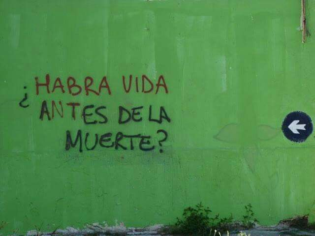

No creo en sentidos prefabricados ni en destinos escritos. El mundo no me debe coherencia, y yo no le debo fe. Crecí entendiendo que la existencia es un escenario vacío al que cada uno le inventa significado para no derrumbarse. Yo prefiero mirar el vacío directamente.
No me interesa adornar la vida con esperanzas artificiales. Me interesa comprenderla: despiezarla, diseccionarla, desnudar sus mecanismos ocultos. Donde otros ven consuelo, yo busco estructura. Donde otros encuentran propósito, yo busco lógica.
Soy el tipo de mente que no se conforma con la superficie. Me mueven las preguntas que incomodan: el origen de la conciencia, la fragilidad de la identidad, la arbitrariedad de la moral, la absurda danza entre orden y caos.
Acepto que no hay un gran plan detrás de nada. Y lejos de paralizarme, eso me libera: si nada tiene un sentido intrínseco, entonces puedo construir el mío con precisión quirúrgica. El conocimiento es la única herramienta que respeto; la lucidez, la única forma de poder que reconozco.
Necesito penetrar en lo más hondo en la grieta. No busco esperanza ni consuelo: busco comprender el mecanismo oculto del universo, incluso si la respuesta final es que no hay ninguno.
Nací vacío y ahora busco en él. Un ejercicio de disecar lo real sin anestesia. Y si hay algo que me define, es esto: no necesito sentido. Necesito verdad.